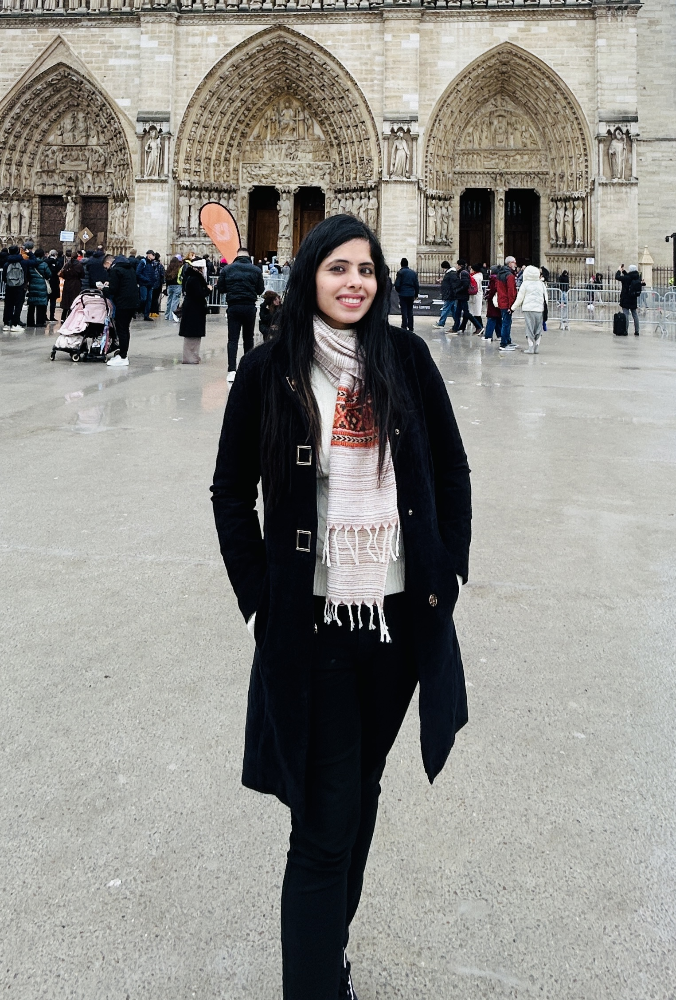

- Kamana Porwal and Tanvi Wadhawan, Unified analysis of discontinuous Galerkin methods for frictional contact problem with normal compliance, Journal of Computational and Applied Mathematics (2023).
- Rohit Khandelwal, Kamana Porwal and Tanvi Wadhawan, Adaptive quadratic finite element method for the unilateral contact problem, Journal of Scientific Computing (2023).
- Kamana Porwal and Tanvi Wadhawan, Quadratic discontinuous Galerkin finite element methods for the unilateral contact problem, Computational Methods in Applied Mathematics (Accepted).
- Kamana Porwal and Tanvi Wadhawan, Convergence analysis of semi-discrete and fully-discrete nonconforming finite element method for the quasi-static contact problem, Journal of Communications on Applied Mathematics and Computation (Accepted).
- Thirupathi Gudi, Kamana Porwal and Tanvi Wadhawan, Higher order discontinuous Galerkin finite element methods for contact problems, Advances in Applied Mechanics (Elsevier) (2025).
- Tanvi Wadhawan, Adaptive Modified Weak Galerkin Method for Obstacle Problem, BIT Numerical Mathematics (2025).
- Zhaonan Dong, Alexandre Ern and Tanvi Wadhawan, hp-a posteriori error estimates for hybrid high-order methods applied to biharmonic problems, arXiv:2602.06872 (Submitted).
- Zhaonan Dong and Tanvi Wadhawan, On the constants in inverse trace inequalities for polynomials orthogonal to lower-order subspaces, arXiv:2512.14570 (Submitted).
- Kamana Porwal, Tanvi Wadhawan and Mansi Yadav, Pointwise adaptive weak Galerkin methods for the elliptic obstacle problem, (Submitted).
- Rohit Khandelwal, Kamana Porwal and Tanvi Wadhawan, Supremum norm a posteriori error control of quadratic finite element method for the Signorini problem, arXiv:2401.02181 (Submitted).
- Rohit Khandelwal, Kamana Porwal and Tanvi Wadhawan, Pointwise a posteriori error control of quadratic discontinuous Galerkin methods for the unilateral contact problem, arXiv:2401.02176 (Submitted).
- Juan Pablo Borthagaray, Franz Chouly and Tanvi Wadhawan, Augmented Lagrangian Method for the Elastoplastic Torsion Problem, (Under preparation).

Tanvi Wadhawan
I'm
About Me
I am currently a Postdoctoral Fellow at Inria Paris, working with the SERENA team. My research focuses on finite element methods for solving linear and nonlinear partial differential equations, particularly those arising from variational inequalities. I am interested in modeling contact problems—both frictional and frictionless—using adaptive finite element techniques and developing efficient and reliable a posteriori error estimators. I also perform numerical simulations in MATLAB to validate theoretical results.
I completed my PhD in Mathematics from Indian Institute of Technology Delhi, under the supervision of Prof. Kamana Porwal. My doctoral research was centered on finite element methods for contact problems, with an emphasis on both theoretical analysis and computational implementation. Prior to that, I earned my Master's degree in Mathematics from IIT Roorkee and my Bachelor's degree from University of Delhi.
Work Experience
Inria Paris (SERENA Team)
September 2025 - Present
Postdoctoral Fellow
Working on advanced numerical methods for partial differential equations, including hybrid high-order methods and a posteriori error estimation for complex variational problems.
Harish-Chandra Research Institute, Prayagraj
May 2024 - August 2025
Postdoctoral Fellow
Conducted research on finite element methods for contact problems, focusing on convergence analysis and numerical implementation.
Universidad de la República (Udelar), Uruguay
September 2024 - October 2024
Visiting Researcher
Collaborated on research related to numerical methods and high-order discretization techniques for partial differential equations.
Indian Institute of Technology Delhi
March 2024 - May 2024
Research Associate
Worked on finite element analysis and contributed to ongoing research projects in numerical PDEs and variational inequalities.
Indian Institute of Technology Delhi
December 2018 - December 2023
Research Scholar (JRF & SRF)
Pursued doctoral research on finite element methods for frictional and frictionless contact problems, including theoretical analysis and MATLAB implementation.
Seth Jai Prakash Institute of Engineering
August 2018 - November 2018
Lecturer
Taught undergraduate mathematics courses and guided students in foundational topics including calculus and differential equations.
Education
Indian Institute of Technology Delhi
January 2019 - February 2024
PhD in Mathematics
Thesis: Finite element method for frictional and frictionless contact problems
Supervisor: Prof. Kamana Porwal
Indian Institute of Technology Roorkee
July 2016 - July 2018
Master of Science in Mathematics
CGPA: 9.02/10 (95%)
Miranda House, University of Delhi
July 2013 - July 2016
Bachelor of Science in Mathematics
Percentage: 91.2%
Sacred Heart Convent School, Jagadhri
2011 - 2013
Senior Secondary (CBSE)
93.8% (Gold Medalist)
Sacred Heart Convent School, Jagadhri
2011
Secondary School (CBSE)
CGPA: 10/10 (95%, Gold Medalist)
Publications
Research

Finite Element Methods (FEM)
My research focuses on the development and analysis of finite element methods for solving linear and nonlinear partial differential equations, with emphasis on stability, convergence, and error estimation.

Contact Problems
I work on mathematical modeling and numerical approximation of frictional and frictionless contact problems, formulated as variational inequalities of first and second kind.

Adaptive Methods & Error Estimation
My work includes designing adaptive finite element schemes and developing reliable and efficient a posteriori error estimators for improved computational accuracy.

Hybrid High-Order (HHO) Methods
I study hybrid high-order methods for higher-order partial differential equations, including theoretical analysis and derivation of hp-a posteriori error estimates.

Numerical Implementation
I implement numerical experiments in MATLAB to validate theoretical findings and analyze the performance of proposed numerical schemes.
Achievements
- Selected as a Postdoctoral Laureate of the prestigious Fondation Sciences Mathématiques de Paris (FSMP) (2025–2027)
- Research Scholar Travel Award, IIT Delhi, to attend Chemnitz Finite Element Symposium, Germany (2022)
- Research Excellence Travel Award, IIT Delhi, to attend FIAM Conference, Dubai (2023)
- Received funding of INR 252,000 from NBHM to attend ICIAM 2023, Tokyo, Japan
- Secured All India Rank 120 (JRF) in CSIR-UGC NET (2017)
- Secured All India Rank 90 in GATE Mathematics (2018)
- Secured All India Rank 101 in IIT JAM Mathematics (2016)
- Awarded meritorious scholarship at IIT Roorkee (2017–2018)
- Secured 2nd and 3rd positions in Baseline Test in Mathematical Sciences, Miranda House, University of Delhi
- Gold Medalist in National Mathematics Olympiad (AISMTA) during school (Classes X & XI)